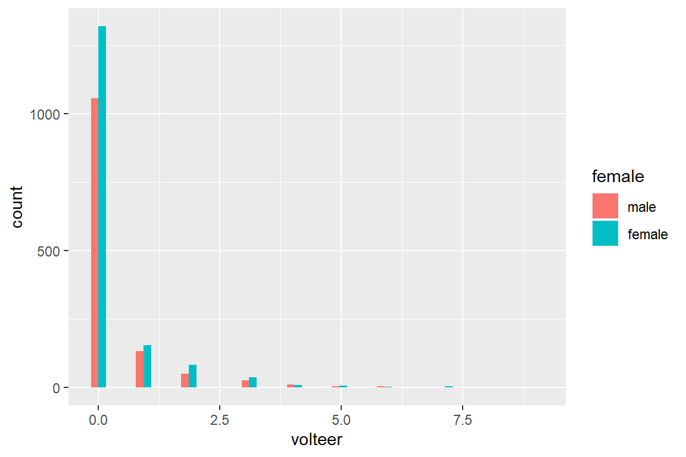
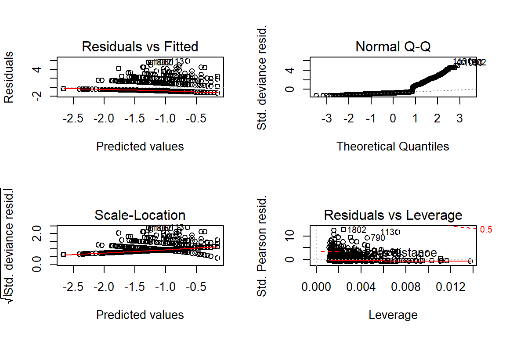
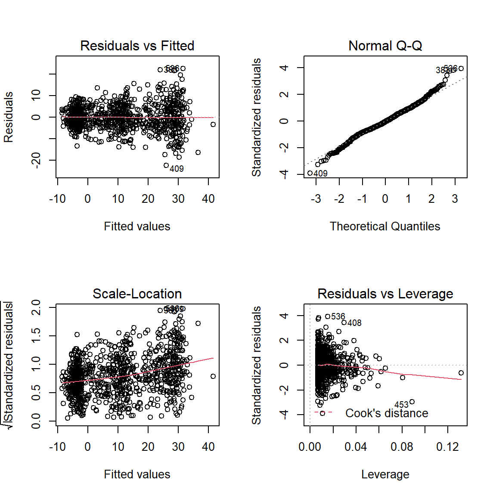
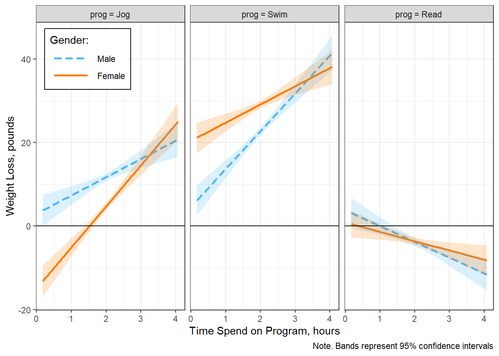
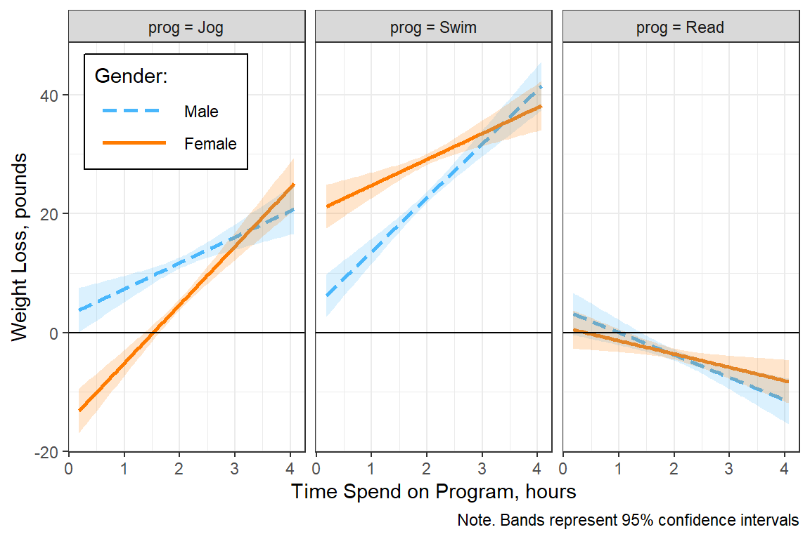
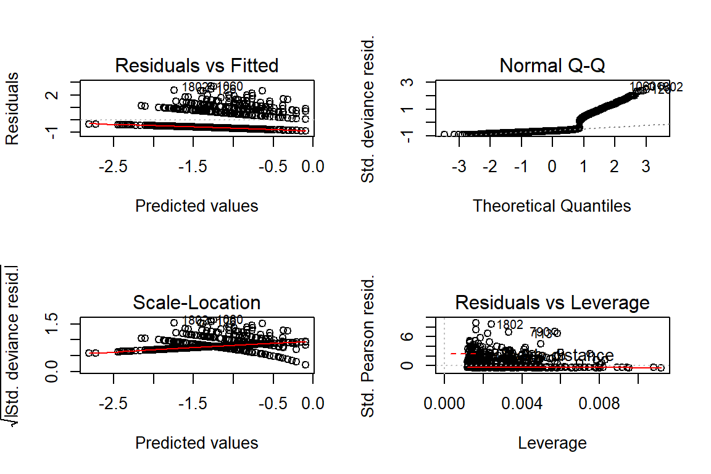

8 Count Outcome Regression - Ex: POssion and Negative Binomial
library(tidyverse)
library(haven) # read in SPSS dataset
library(furniture) # nice table1() descriptives
library(stargazer) # display nice tables: summary & regression
library(texreg) # Convert Regression Output to LaTeX or HTML Tables
library(psych) # contains some useful functions, like headTail
library(car) # Companion to Applied Regression
library(sjPlot) # Quick plots and tables for models
library(glue) # Interpreted String Literals
library(DescTools) # Tools for Descriptive Statistics
library(texreghelpr) # Helper Functions for generalized models
library(pscl) # Political Science Computational Laboratory (ZIP)8.1 Background
8.1.1 Raw Dataset
data_gss <- haven::read_spss("https://raw.githubusercontent.com/CEHS-research/data/master/Hoffmann_datasets/gss.sav") %>%
haven::as_factor()
data_gss# A tibble: 2,903 x 20
id marital divorce childs age income polviews fund attend spanking
<dbl> <fct> <fct> <fct> <dbl> <dbl> <fct> <fct> <fct> <fct>
1 402 divorc~ yes 2 54 10 middle ~ <NA> <NA> <NA>
2 1473 widowed no 0 24 2 slight ~ <NA> <NA> <NA>
3 1909 widowed no 7 75 NA extreme~ <NA> <NA> <NA>
4 334 widowed yes 2 41 NA middle ~ <NA> <NA> <NA>
5 1751 married no 2 37 12 extreme~ <NA> <NA> <NA>
6 456 divorc~ yes 0 40 NA extreme~ <NA> <NA> <NA>
7 292 never ~ no 2 36 9 <NA> <NA> nearl~ <NA>
8 2817 married yes 3 33 NA middle ~ <NA> sever~ <NA>
9 2810 never ~ no 0 18 NA middle ~ <NA> once ~ <NA>
10 2232 widowed no 2 35 6 middle ~ <NA> sever~ <NA>
# ... with 2,893 more rows, and 10 more variables: totrelig <dbl>,
# sei <dbl>, pasei <dbl>, volteer <dbl>, female <fct>, nonwhite <fct>,
# prayer <fct>, educate <dbl>, volrelig <fct>, polview1 <fct>8.2 Exploratory Data Analysis
8.2.1 Entire Sample
--------------------------------------
volteer Freq CumFreq Percent CumPerc
0 2376 2376 81.85% 81.85%
1 286 2662 9.85% 91.70%
2 133 2795 4.58% 96.28%
3 64 2859 2.20% 98.48%
4 19 2878 0.65% 99.14%
5 11 2889 0.38% 99.52%
6 7 2896 0.24% 99.76%
7 6 2902 0.21% 99.97%
9 1 2903 0.03% 100.00%
-------------------------------------- volteer
Min. :0.0000
1st Qu.:0.0000
Median :0.0000
Mean :0.3334
3rd Qu.:0.0000
Max. :9.0000 
8.2.2 By Sex
data_gss %>%
dplyr::group_by(female) %>%
furniture::table1(factor(volteer),
digits = 4,
total = TRUE)
--------------------------------------------------------
female
Total male female
n = 2903 n = 1285 n = 1618
factor(volteer)
0 2376 (81.8%) 1057 (82.3%) 1319 (81.5%)
1 286 (9.9%) 132 (10.3%) 154 (9.5%)
2 133 (4.6%) 50 (3.9%) 83 (5.1%)
3 64 (2.2%) 26 (2%) 38 (2.3%)
4 19 (0.7%) 10 (0.8%) 9 (0.6%)
5 11 (0.4%) 4 (0.3%) 7 (0.4%)
6 7 (0.2%) 5 (0.4%) 2 (0.1%)
7 6 (0.2%) 1 (0.1%) 5 (0.3%)
9 1 (0%) 0 (0%) 1 (0.1%)
--------------------------------------------------------data_gss %>%
dplyr::group_by(female) %>%
furniture::table1(volteer,
digits = 4,
total = TRUE,
test = TRUE)
-----------------------------------------------------------------
female
Total male female P-Value
n = 2903 n = 1285 n = 1618
volteer 0.365
0.3334 (0.8858) 0.3167 (0.8493) 0.3467 (0.9139)
-----------------------------------------------------------------
8.3 Poisson Reression
8.3.1 Single Predictor: Sex
8.3.1.1 Fit the model
glm_possion_1 <- glm(volteer ~ female,
data = data_gss,
family = poisson(link = "log"))
summary(glm_possion_1)
Call:
glm(formula = volteer ~ female, family = poisson(link = "log"),
data = data_gss)
Deviance Residuals:
Min 1Q Median 3Q Max
-0.8327 -0.8327 -0.7959 -0.7959 6.4273
Coefficients:
Estimate Std. Error z value Pr(>|z|)
(Intercept) -1.14970 0.04957 -23.19 <2e-16 ***
femalefemale 0.09048 0.06511 1.39 0.165
---
Signif. codes: 0 '***' 0.001 '**' 0.01 '*' 0.05 '.' 0.1 ' ' 1
(Dispersion parameter for poisson family taken to be 1)
Null deviance: 3658.1 on 2902 degrees of freedom
Residual deviance: 3656.2 on 2901 degrees of freedom
AIC: 4924.1
Number of Fisher Scoring iterations: 6Note: The deviance residuals range as high as 6.47!!!
8.3.1.2 Marginal Estimates
Note: Results are given on the log (not the response) scale
female emmean SE df asymp.LCL asymp.UCL
male -1.15 0.0496 Inf -1.25 -1.053
female -1.06 0.0422 Inf -1.14 -0.976
Results are given on the log (not the response) scale.
Confidence level used: 0.95 Note: These means are on the original scale (number of volunteer activities in the past year). These standard errors are called “delta-method standard errors”
# A tibble: 2 x 5
female fit se lower upper
<fct> <dbl> <dbl> <dbl> <dbl>
1 male 0.317 0.0157 0.287 0.349
2 female 0.347 0.0146 0.319 0.3778.3.1.3 Pairwise Post Hoc Test
contrast estimate SE df z.ratio p.value
male - female -0.0905 0.0651 Inf -1.390 0.1647
Results are given on the log (not the response) scale. 8.3.1.4 Parameter Estimates
Coefficients are in terms of the LOG of the number of times a person volunteers per year.
(Intercept) femalefemale
-1.14970081 0.09047562 Exponentiating the coefficients (betas) returns the values to the original scale (number of times a person volunteers per year) and is refered to as the incident rate ratio IRR.
(Intercept) femalefemale
0.3167315 1.0946948 texreg::screenreg(list(glm_possion_1,
texreghelpr::extract_glm_exp(glm_possion_1,
include.aic = FALSE,
include.bic = FALSE,
include.loglik = FALSE,
include.deviance = FALSE,
include.nobs = FALSE)),
custom.model.names = c("b (SE)", "RR [95% CI]"),
custom.coef.map = list("(Intercept)" ="Intercept",
femalefemale = "Female vs. Male"),
caption = "GLM: Simple Possion Regression",
single.row = TRUE,
digits = 3)
==============================================================
b (SE) RR [95% CI]
--------------------------------------------------------------
Intercept -1.150 (0.050) *** 0.317 [0.287; 0.349] *
Female vs. Male 0.090 (0.065) 1.095 [0.964; 1.244] *
--------------------------------------------------------------
AIC 4924.135
BIC 4936.082
Log Likelihood -2460.068
Deviance 3656.198
Num. obs. 2903
==============================================================
*** p < 0.001, ** p < 0.01, * p < 0.05 (or 0 outside the confidence interval).8.3.2 Multiple Predictors
8.3.2.1 Fit the model
glm_possion_2 <- glm(volteer ~ female + nonwhite + educate + income,
data = data_gss,
family = poisson(link = "log"))
summary(glm_possion_2)
Call:
glm(formula = volteer ~ female + nonwhite + educate + income,
family = poisson(link = "log"), data = data_gss)
Deviance Residuals:
Min 1Q Median 3Q Max
-1.3061 -0.8864 -0.7597 -0.6064 5.8489
Coefficients:
Estimate Std. Error z value Pr(>|z|)
(Intercept) -3.15830 0.24479 -12.902 < 2e-16 ***
femalefemale 0.26132 0.07785 3.357 0.000789 ***
nonwhitenon-white -0.28038 0.10838 -2.587 0.009681 **
educate 0.10280 0.01443 7.123 1.05e-12 ***
income 0.05683 0.01566 3.628 0.000286 ***
---
Signif. codes: 0 '***' 0.001 '**' 0.01 '*' 0.05 '.' 0.1 ' ' 1
(Dispersion parameter for poisson family taken to be 1)
Null deviance: 2566.8 on 1943 degrees of freedom
Residual deviance: 2465.5 on 1939 degrees of freedom
(959 observations deleted due to missingness)
AIC: 3380.9
Number of Fisher Scoring iterations: 68.3.2.2 Marginal Estimates
Note: These means are on the original scale (number of volunteer activities in the past year). These standard errors are called “delta-method standard errors”
effects::Effect(focal.predictors = c("female"),
mod = glm_possion_2,
xlevels = list(nonwhite = "non-white",
educate = 5,
income = 12)) %>%
data.frame()# A tibble: 2 x 5
female fit se lower upper
<fct> <dbl> <dbl> <dbl> <dbl>
1 male 0.294 0.0175 0.262 0.330
2 female 0.382 0.0201 0.344 0.4238.3.2.3 Parameter Estimates
Coefficients are in terms of the LOG of the number of times a person volunteers per year.
(Intercept) femalefemale nonwhitenon-white educate
-3.15830174 0.26132182 -0.28037733 0.10280183
income
0.05682778 Exponentiating the coefficients (betas) returns the values to the original scale (number of times a person volunteers per year) and is refered to as the incident rate ratio IRR.
(Intercept) femalefemale nonwhitenon-white educate
0.04249785 1.29864553 0.75549861 1.10827176
income
1.05847350 texreg::screenreg(list(glm_possion_2,
texreghelpr::extract_glm_exp(glm_possion_2,
include.aic = FALSE,
include.bic = FALSE,
include.loglik = FALSE,
include.deviance = FALSE,
include.nobs = FALSE)),
custom.model.names = c("b (SE)", "RR [95% CI]"),
custom.coef.map = list("(Intercept)" ="Intercept",
femalefemale = "Female vs. Male",
"nonwhitenon-white" = "Non-white vs. White",
educate = "Education, Years",
income = "Income"),
caption = "GLM: Multiple Possion Regression",
single.row = TRUE,
digits = 3)
==================================================================
b (SE) RR [95% CI]
------------------------------------------------------------------
Intercept -3.158 (0.245) *** 0.042 [0.026; 0.068] *
Female vs. Male 0.261 (0.078) *** 1.299 [1.115; 1.513] *
Non-white vs. White -0.280 (0.108) ** 0.755 [0.608; 0.930] *
Education, Years 0.103 (0.014) *** 1.108 [1.077; 1.140] *
Income 0.057 (0.016) *** 1.058 [1.027; 1.092] *
------------------------------------------------------------------
AIC 3380.860
BIC 3408.722
Log Likelihood -1685.430
Deviance 2465.514
Num. obs. 1944
==================================================================
*** p < 0.001, ** p < 0.01, * p < 0.05 (or 0 outside the confidence interval).8.3.2.4 Assess Model Fit
McFadden
0.3151547 McFadden McFaddenAdj CoxSnell Nagelkerke
0.315 0.313 0.550 0.597
AldrichNelson VeallZimmermann Efron McKelveyZavoina
0.444 0.619 0.020 NA
Tjur AIC BIC logLik
NA 3380.860 3408.722 -1685.430
logLik0 G2
-2461.037 1551.215 8.3.2.5 Interpretation
female: Adjusting for the effects of rate/ethnicity, education, and income, FEMALES are expected to volunteer about 30% MORE activities per year than males.nonwhite: Adjusting for the effects of sex, education, and income, NON-WHITES are expected to volunteer for about 24% LESS activities per year than males.educate: Each one-year increase in education is associated with an 11% increase in the number of volunteer activities per year, adjusting for the effects of sex, race/ethnicity, and income.
8.3.2.6 Residual Diagnostics

These residuals do NOT look good, especially the Q-Q plot for normality.
8.3.2.7 Marginal Plot
# A tibble: 2 x 8
vars n mean sd min max range se
<int> <dbl> <dbl> <dbl> <dbl> <dbl> <dbl> <dbl>
1 1 2894 13.4 2.93 0 20 20 0.0544
2 2 1947 9.86 2.99 1 12 11 0.0677 educate income
Min. : 0.00 Min. : 1.000
1st Qu.:12.00 1st Qu.: 9.000
Median :13.00 Median :11.000
Mean :13.36 Mean : 9.862
3rd Qu.:16.00 3rd Qu.:12.000
Max. :20.00 Max. :12.000
NA's :9 NA's :956 effects::Effect(focal.predictors = c("female", "nonwhite", "educate", "income"),
mod = glm_possion_2,
xlevels = list(educate = seq(from = 0, to = 20, by = .1),
income = c(8, 10, 12))) %>%
data.frame() %>%
dplyr::mutate(income = factor(income)) %>%
ggplot(aes(x = educate,
y = fit)) +
geom_ribbon(aes(ymin = fit - se, # bands = +/- 1 SEM
ymax = fit + se,
fill = female),
alpha = .2) +
geom_line(aes(linetype = female,
color = female),
size = 1) +
theme_bw() +
labs(x = "Education, Years",
y = "Predicted Mean Number of Volunteer Activities",
color = NULL,
fill = NULL,
linetype = NULL) +
theme(legend.position = c(0, 1),
legend.justification = c(-.1, 1.1),
legend.background = element_rect(color = "black"),
legend.key.width = unit(2, "cm")) +
facet_grid(nonwhite ~ income)
effects::Effect(focal.predictors = c("female", "nonwhite", "educate", "income"),
mod = glm_possion_2,
xlevels = list(educate = seq(from = 0, to = 20, by = .1),
income = c(8, 10, 12))) %>%
data.frame() %>%
dplyr::mutate(income = factor(income)) %>%
ggplot(aes(x = educate,
y = fit)) +
geom_line(aes(linetype = fct_rev(income),
color = fct_rev(income)),
size = 1) +
theme_bw() +
labs(x = "Education, Years",
y = "Predicted Mean Number of Volunteer Activities",
color = "Income:",
fill = "Income:",
linetype = "Income:") +
theme(legend.position = c(0, 1),
legend.justification = c(-.1, 1.1),
legend.background = element_rect(color = "black"),
legend.key.width = unit(2, "cm")) +
facet_grid(nonwhite ~ female) +
scale_linetype_manual(values = c("solid", "longdash", "dotted"))
effects::Effect(focal.predictors = c("female", "nonwhite", "educate", "income"),
mod = glm_possion_2,
xlevels = list(educate = seq(from = 0, to = 20, by = .1),
income = c(8, 10, 12))) %>%
data.frame() %>%
dplyr::mutate(income = factor(income)) %>%
ggplot(aes(x = educate,
y = fit)) +
geom_ribbon(aes(ymin = fit - se, # bands = +/- 1 SEM
ymax = fit + se,
fill = nonwhite),
alpha = .2) +
geom_line(aes(linetype = nonwhite,
color = nonwhite),
size = 1) +
theme_bw() +
labs(x = "Education, Years",
y = "Predicted Mean Number of Volunteer Activities",
color = NULL,
fill = NULL,
linetype = NULL) +
theme(legend.position = c(0, .5),
legend.justification = c(-.05, 1.1),
legend.background = element_rect(color = "black"),
legend.key.width = unit(2, "cm")) +
facet_grid(female ~ income) +
scale_color_manual(values = c("darkgreen", "orange")) +
scale_fill_manual(values = c("darkgreen", "orange"))
effects::Effect(focal.predictors = c("female", "educate"),
mod = glm_possion_2,
xlevels = list(educate = seq(from = 0,
to = 20,
by = .1),
income = 12)) %>%
data.frame() %>%
ggplot(aes(x = educate,
y = fit)) +
geom_ribbon(aes(ymin = fit - se, # bands = +/- 1 SEM
ymax = fit + se,
fill = female),
alpha = .2) +
geom_line(aes(linetype = female,
color = female),
size = 1) +
theme_bw() +
labs(x = "Education, Years",
y = "Predicted Mean Number of Volunteer Activities",
color = NULL,
fill = NULL,
linetype = NULL) +
theme(legend.position = c(0, 1),
legend.justification = c(-.1, 1.1),
legend.background = element_rect(color = "black"),
legend.key.width = unit(2, "cm")) 
8.4 Negative Binomial Regression
8.4.1 Multiple Predictors
8.4.1.1 Fit the model
glm_negbin_1 <- MASS::glm.nb(volteer ~ female + nonwhite + educate + income,
data = data_gss)
summary(glm_negbin_1)
Call:
MASS::glm.nb(formula = volteer ~ female + nonwhite + educate +
income, data = data_gss, init.theta = 0.2559648877, link = log)
Deviance Residuals:
Min 1Q Median 3Q Max
-0.8798 -0.6897 -0.6141 -0.5211 2.7019
Coefficients:
Estimate Std. Error z value Pr(>|z|)
(Intercept) -3.24738 0.37283 -8.710 < 2e-16 ***
femalefemale 0.28441 0.12312 2.310 0.0209 *
nonwhitenon-white -0.31107 0.16203 -1.920 0.0549 .
educate 0.11200 0.02321 4.825 1.4e-06 ***
income 0.05193 0.02264 2.293 0.0218 *
---
Signif. codes: 0 '***' 0.001 '**' 0.01 '*' 0.05 '.' 0.1 ' ' 1
(Dispersion parameter for Negative Binomial(0.256) family taken to be 1)
Null deviance: 1068.5 on 1943 degrees of freedom
Residual deviance: 1024.3 on 1939 degrees of freedom
(959 observations deleted due to missingness)
AIC: 2851.6
Number of Fisher Scoring iterations: 1
Theta: 0.2560
Std. Err.: 0.0251
2 x log-likelihood: -2839.5640 Note: the deviance residuals all have absolute values less than 3-4’ish…better than before
8.4.1.2 Marginal Estimates
Note: These means are on the original scale (number of volunteer activities in the past year). These standard errors are called “delta-method standard errors”
effects::Effect(focal.predictors = c("female"),
mod = glm_negbin_1,
xlevels = list(nonwhite = "non-white",
educate = 5,
income = 12)) %>%
data.frame()# A tibble: 2 x 5
female fit se lower upper
<fct> <dbl> <dbl> <dbl> <dbl>
1 male 0.289 0.0257 0.243 0.344
2 female 0.384 0.0322 0.326 0.4538.4.1.3 Parameter Estimates
Coefficients are in terms of the LOG of the number of times a person volunteers per year.
(Intercept) femalefemale nonwhitenon-white educate
-3.24738340 0.28440826 -0.31107286 0.11199528
income
0.05193102 Exponentiating the coefficients (betas) returns the values to the original scale (number of times a person volunteers per year) and is refered to as the incident rate ratio IRR.
(Intercept) femalefemale nonwhitenon-white educate
0.0388758 1.3289754 0.7326605 1.1185076
income
1.0533031 texreg::screenreg(list(glm_negbin_1,
texreghelpr::extract_glm_exp(glm_negbin_1,
include.aic = FALSE,
include.bic = FALSE,
include.loglik = FALSE,
include.deviance = FALSE,
include.nobs = FALSE)),
custom.model.names = c("b (SE)", "RR [95% CI]"),
custom.coef.map = list("(Intercept)" ="Intercept",
femalefemale = "Female vs. Male",
"nonwhitenon-white" = "Non-white vs. White",
educate = "Education, Years",
income = "Income"),
caption = "GLM: Negitive Binomial Regression",
single.row = TRUE,
digits = 3)
==================================================================
b (SE) RR [95% CI]
------------------------------------------------------------------
Intercept -3.247 (0.373) *** 0.039 [0.018; 0.081] *
Female vs. Male 0.284 (0.123) * 1.329 [1.043; 1.696] *
Non-white vs. White -0.311 (0.162) 0.733 [0.533; 1.008] *
Education, Years 0.112 (0.023) *** 1.119 [1.067; 1.173] *
Income 0.052 (0.023) * 1.053 [1.008; 1.101] *
------------------------------------------------------------------
AIC 2851.564
BIC 2884.999
Log Likelihood -1419.782
Deviance 1024.343
Num. obs. 1944
==================================================================
*** p < 0.001, ** p < 0.01, * p < 0.05 (or 0 outside the confidence interval).8.4.1.4 Residual Diagnostics

These still don’t look very good :(
8.5 Zero Inflated Poisson
8.5.0.1 Fit the model
glm_zip_1 <- pscl::zeroinfl(volteer ~ female + nonwhite + educate + income | educate,
data = data_gss)
summary(glm_zip_1)
Call:
pscl::zeroinfl(formula = volteer ~ female + nonwhite + educate +
income | educate, data = data_gss)
Pearson residuals:
Min 1Q Median 3Q Max
-0.5778 -0.4416 -0.3908 -0.3383 9.4777
Count model coefficients (poisson with log link):
Estimate Std. Error z value Pr(>|z|)
(Intercept) -1.09660 0.34808 -3.150 0.00163 **
femalefemale 0.20615 0.09452 2.181 0.02918 *
nonwhitenon-white -0.20101 0.13444 -1.495 0.13488
educate 0.05648 0.02140 2.639 0.00833 **
income 0.04888 0.01882 2.597 0.00940 **
Zero-inflation model coefficients (binomial with logit link):
Estimate Std. Error z value Pr(>|z|)
(Intercept) 2.01161 0.41192 4.883 1.04e-06 ***
educate -0.07179 0.02768 -2.593 0.00951 **
---
Signif. codes: 0 '***' 0.001 '**' 0.01 '*' 0.05 '.' 0.1 ' ' 1
Number of iterations in BFGS optimization: 18
Log-likelihood: -1434 on 7 Df count_(Intercept) count_femalefemale count_nonwhitenon-white
0.3340048 1.2289390 0.8179079
count_educate count_income zero_(Intercept)
1.0581037 1.0500947 7.4753687
zero_educate
0.9307240 Compares two models fit to the same data that do not nest via Vuong’s non-nested test.
Vuong Non-Nested Hypothesis Test-Statistic:
(test-statistic is asymptotically distributed N(0,1) under the
null that the models are indistinguishible)
-------------------------------------------------------------
Vuong z-statistic H_A p-value
Raw 8.000302 model1 > model2 6.6613e-16
AIC-corrected 7.936568 model1 > model2 9.9920e-16
BIC-corrected 7.758989 model1 > model2 4.3299e-158.6 Zero Inflated Negative Binomial
8.6.0.1 Fit the model
glm_zinb_1 <- pscl::zeroinfl(volteer ~ female + nonwhite + educate + income | educate,
data = data_gss,
dist = "negbin")
summary(glm_zinb_1)
Call:
pscl::zeroinfl(formula = volteer ~ female + nonwhite + educate +
income | educate, data = data_gss, dist = "negbin")
Pearson residuals:
Min 1Q Median 3Q Max
-0.5146 -0.4122 -0.3704 -0.3222 8.8088
Count model coefficients (negbin with log link):
Estimate Std. Error z value Pr(>|z|)
(Intercept) -1.79278 0.54745 -3.275 0.00106 **
femalefemale 0.26245 0.11745 2.235 0.02545 *
nonwhitenon-white -0.28519 0.15603 -1.828 0.06758 .
educate 0.06817 0.03317 2.055 0.03987 *
income 0.05292 0.02159 2.451 0.01426 *
Log(theta) 0.05056 0.46242 0.109 0.91293
Zero-inflation model coefficients (binomial with logit link):
Estimate Std. Error z value Pr(>|z|)
(Intercept) 1.28322 0.71435 1.796 0.0724 .
educate -0.07208 0.04684 -1.539 0.1238
---
Signif. codes: 0 '***' 0.001 '**' 0.01 '*' 0.05 '.' 0.1 ' ' 1
Theta = 1.0519
Number of iterations in BFGS optimization: 33
Log-likelihood: -1416 on 8 Df count_(Intercept) count_femalefemale count_nonwhitenon-white
0.1664962 1.3001110 0.7518708
count_educate count_income zero_(Intercept)
1.0705424 1.0543416 3.6082563
zero_educate
0.9304550 Vuong Non-Nested Hypothesis Test-Statistic:
(test-statistic is asymptotically distributed N(0,1) under the
null that the models are indistinguishible)
-------------------------------------------------------------
Vuong z-statistic H_A p-value
Raw 1.3486325 model1 > model2 0.088728
AIC-corrected 0.5592035 model1 > model2 0.288011
BIC-corrected -1.6403440 model2 > model1 0.050467Vuong Non-Nested Hypothesis Test-Statistic:
(test-statistic is asymptotically distributed N(0,1) under the
null that the models are indistinguishible)
-------------------------------------------------------------
Vuong z-statistic H_A p-value
Raw -2.428612 model2 > model1 0.0075784
AIC-corrected -2.428612 model2 > model1 0.0075784
BIC-corrected -2.428612 model2 > model1 0.0075784The ‘best’ model is the zero-inflated negative binomial